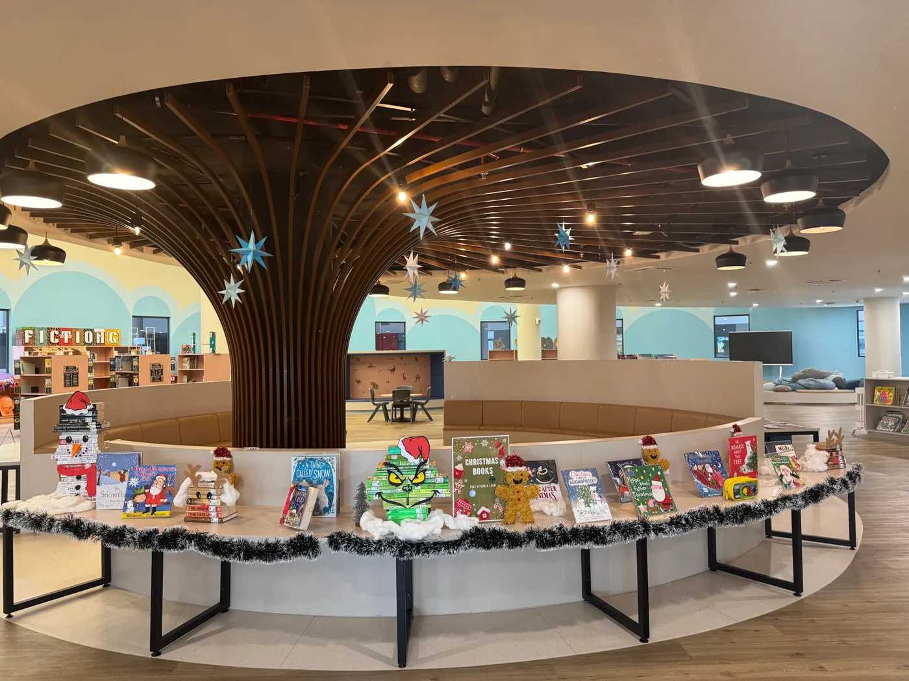
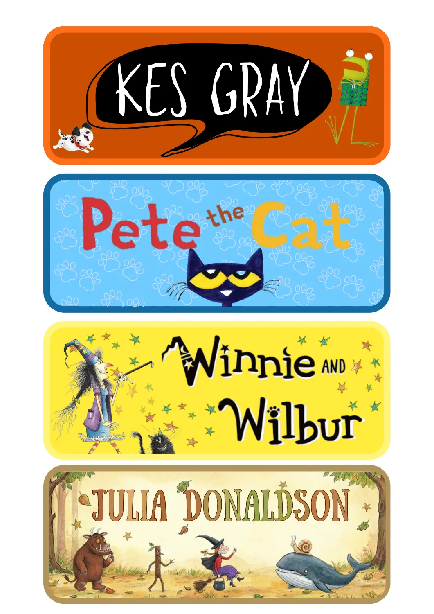

Library Assistant
Sunway International School · Subang Jaya
Acquisitions, cataloguing, circulation, collection organisation, displays and service improvements.
A portfolio of practical ideas, made real.
I’m Farah Aina. I organise resources, improve everyday workflows and help make libraries places people want to explore.
Library Assistant at Sunway International School.
Experience in school and corporate library settings.


A familiar name.Selected work · 2025–2026
The ideas, decisions and hands-on work behind clearer shelves, better processes and welcoming library spaces.
The person behind the work
I enjoy figuring out why something feels difficult, and making the next step clearer for the people using it.
My work brings together cataloguing, acquisition, vendor communication, user support and creative library projects. I work closely with my supervisor and colleagues, share practical ideas and help others learn the process.
I explore digital tools through real projects, including a Google Sheets and Apps Script tracker that I’m currently developing. Accuracy, useful documentation and thoughtful preparation matter to me.
Experience & education
Sunway International School · Subang Jaya
Acquisitions, cataloguing, circulation, collection organisation, displays and service improvements.
PETRONAS Resource Centre · Kuala Lumpur
Cataloguing, reference support, News Digest preparation, information requests and archival records.
Bachelor of Information Science (Hons) · UiTM
CGPA 3.44 · Dean’s List, Semesters 1 & 2
The next chapter
Interested in library and knowledge management roles where I can contribute, take ownership and keep learning.
Get in touch ↗Find me on LinkedIn ↗